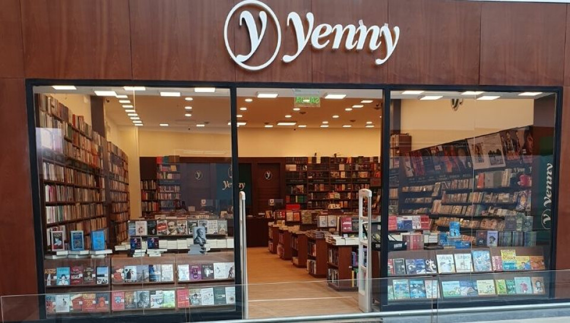

La Empresa
Nuestra librería cuenta con más de 50 años de trayectoria en la ciudad. En el año 2014 renovamos y ampliamos nuestro local para brindar más y mejores servicios a nuestros clientes. En Librería Don Bosco podés encontrar todo lo que necesitás en productos de librería escolar y comercial, papelería en general, libros de texto, insumos informáticos y artículos de religión y santería.